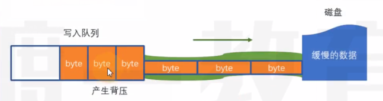

一、思维导图及代码

const path = require("path"); |
二、写入流程
程序也是在内存中执行，由于内存运行速度非常快，所以写入的数据会非常快的进入写入通道，但是磁盘处理数据速度非常慢，所以在后面排队的数据会越来越多，当写入通道排满时，就会在内存的写入队列中排队
当写入通道中的所有数据都进入磁盘之后，写入通道清空，触发drain事件，然后写入队列中的数据才可以进入写入通道
如果写入通道没排满是不会触发drain事件的
三、写入通道
可以想象成写入队列和磁盘之间有一个通道，通道的大小就是highWaterMark,默认值为16KB
如果一次写入的数据大小大于等于通道能装下数据的数量，返回false，表明此时通道内没有空间了，那么下一次写入的数据就需要在内存里面排队

- 如果返回值true，表明通道没有占满，那么下一次写入的数据可以直接进入通道
四、背压问题
- 如果数据量极大，那么排队的数据会很多，绝大部分的数据会在内存的写入队列中排队，内存的空间非常宝贵，但是大部分空间用来放写入队列，内存的压力就会很大，这就是背压问题
const path = require("path"); |
- 解决方法：一直写，知道写到上限或无法再写入为止
const path = require("path"); |
- 2中只能写入两个a，如何能够达到写入10M又不造成背压问题呢
const path = require("path"); |
五、将一个文件读出来复制到另一个文件有哪些做法
- 传统方式：用readFile将文件内容读到内存，在文件非常大的情况下，该方法消耗的内存非常恐怖，所以只适合复制小文件
const path = require("path"); |
- 最佳方案：用两个流，适合大文件
const path = require("path"); |
- 实际上方案二已经被官方写好了，既
rs.pipe(ws);
const path = require("path"); |